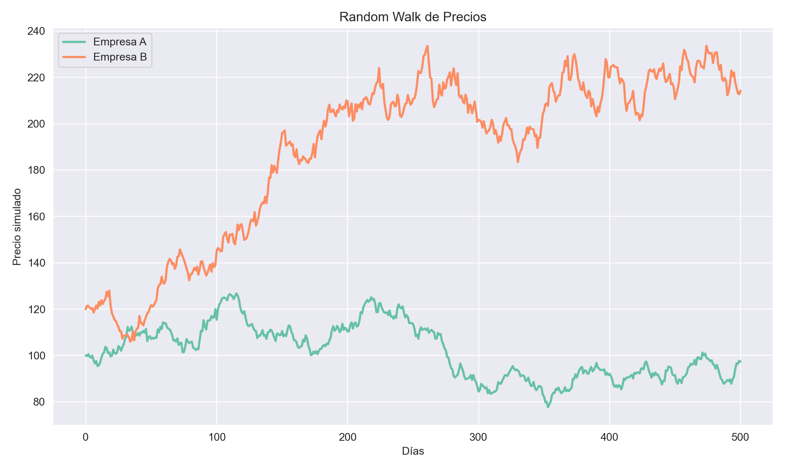
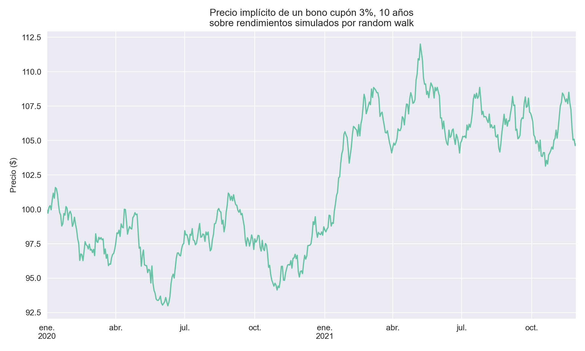
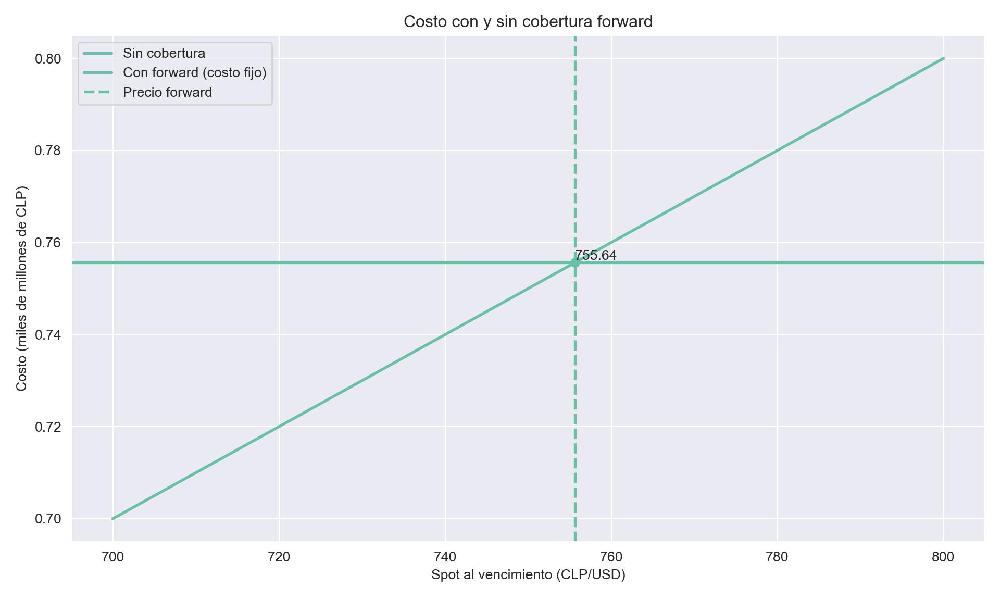
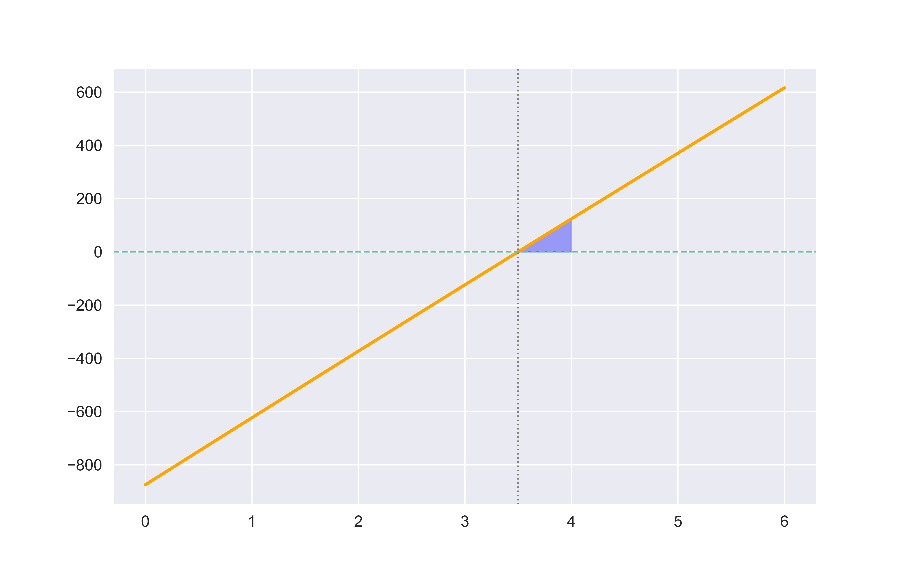
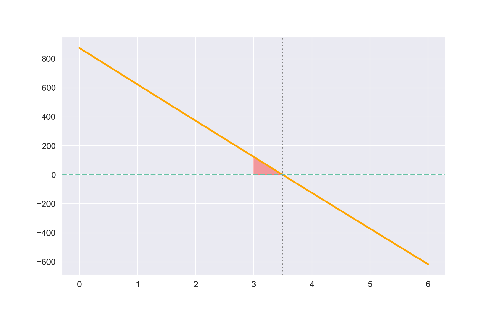
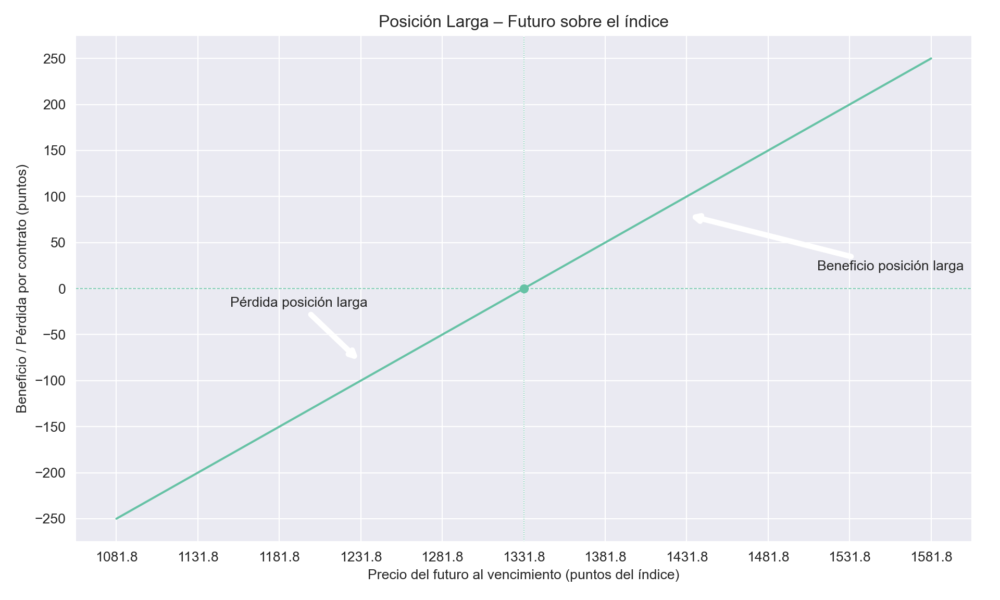
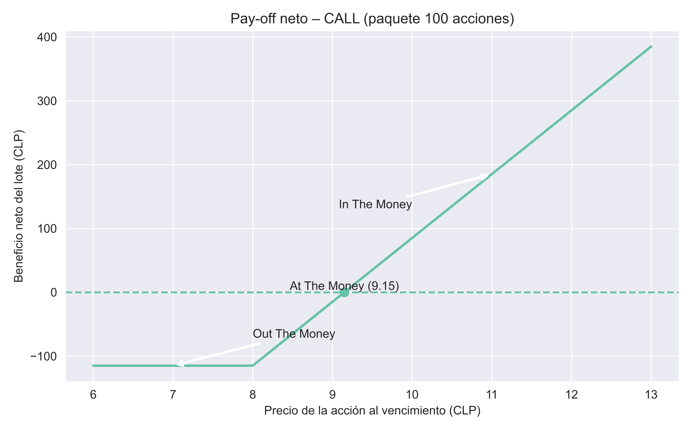
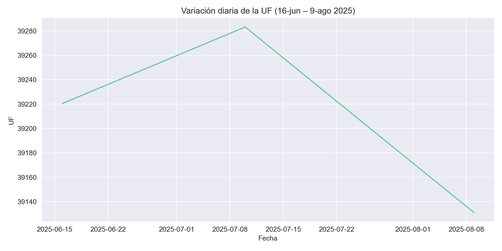

# DATOS EMPRESA A
r = 0.15 # tasa de descuento
# Dividendos años 1, 2, 3
D1_A = 20
D2_A = 10
D3_A = 60
g_A = 0.08 # g = crecimiento perpetuo desde año 4
# Valor presente de dividendos explícitos
vp_dividendos_A = D1_A / (1 + r)**1 + D2_A / (1 + r)**2 + D3_A / (1 + r)**3
# Dividendo del año 4
D4_A = D3_A * (1 + g_A)
# Valor perpetuo a partir del año 3 (traído a año 0)
P3_A = D4_A / (r - g_A)
vp_terminal_A = P3_A / (1 + r)**3
# Precio total acción A
precio_A = vp_dividendos_A + vp_terminal_A
# DATOS EMPRESA B
r = 0.15 # tasa de descuento
D1_B = 10 # dividendo a pagar
g_B = 0.12 # g = crecimiento constante
# Dividendo año 1 (es el que van a pagar por eso 10)
D1_B = 10
# Precio actual con crecimiento constante
precio_B = D1_B / (r - g_B)

Profesor:
- Carlos CavieresIntegrantes:
- Meboly Vega
- Vicente Román
- Luis Gaete
- Felipe Ugalde1 Introducción Librerias y Paquetes a instalar
El presente informe muestra ejercicios relacionados con ocho activos financieros vistos durante el semestre en la asignatura. El diseño del informe se realizó mediante el motor de Quarto a través de RStudio, donde a su vez se trabajó con el lenguaje de programación Python (fue un desafio traspasar Colab a Rstudio). A continuación (chunk no visible en el informe), se ejecutan las líneas de código correspondientes a la base de funcionamiento del script (instalación de paquetes y librerías necesarias).
Nota: Visual Studio Code es capaz de generar un informe a través del código mediante Ctrl+E y Ctrl+Shift+K (Previsualiza el documento); En caso de que ello no funcione, dentro de Github se encuentra el HTLM siendo este https://vicenteromausach.github.io/ActivosFinancierosPy.github.io/ . de todas maneras se recomienda la ejecución y renderizado en RStudio (tanto en R como en Python) mediante el botón RENDER ubicado en la cinta de opciones del archivo .qmd
2 Activo: Acciones
Definición
Las acciones son títulos de propiedad que otorgan a su poseedor una participación proporcional en el capital y en los flujos futuros (dividendos) de una empresa.
El valor teórico de una acción se obtiene descontando al presente los dividendos esperados y, de ser necesario, un valor terminal.
2.1 Ejemplo (Clases)
La empresa A pagará durante los próximos tres años dividendos de $20, $10 y $60.
A partir del cuarto año, los dividendos crecerán indefinidamente al 8 % anual.
La empresa B va a pagar un dividendo de $10 y este crecerá a una tasa constante del 12 % anual.
La tasa de descuento de mercado es 15 %.
¿Cuál es el valor actual de la acción de cada empresa?
Fórmulas
Modelo de Gordon‑Shapiro (crecimiento constante)
\[ P_0 = \frac{D_1}{r - g} \]
Modelo de dos etapas (crecimiento no constante seguido de crecimiento perpetuo)
\[ P_0 \;=\; \sum_{t=1}^{t} \frac{D_t}{(1+r)^{n}} \;+\; \frac{D_n\,(1+g)}{(r-g)\,(1+r)^{n}} \]
D_t: dividendo en el año t
r: tasa de descuento
g: tasa de crecimiento
n: último año de la etapa explícita
2.2 Código R
2.2.1 Tabla de Resultados
print(" ===== RESULTADOS ===== ") ===== RESULTADOS ===== print("EMPRESA A (dividendos mixtos + crecimiento):")EMPRESA A (dividendos mixtos + crecimiento):print(f"- Valor presente de dividendos (años 1–3): ${vp_dividendos_A:.2f}")- Valor presente de dividendos (años 1–3): $64.40print(f"- Valor presente de perpetuidad desde año 4: ${vp_terminal_A:.2f}")- Valor presente de perpetuidad desde año 4: $608.67print(f"- Precio estimado de la acción A: ${precio_A:.2f}")- Precio estimado de la acción A: $673.08print("EMPRESA B (crecimiento constante):")EMPRESA B (crecimiento constante):print(f"- Dividendo esperado año 1: ${D1_B:.2f}")- Dividendo esperado año 1: $10.00print(f"- Precio estimado de la acción B: ${precio_B:.2f}")- Precio estimado de la acción B: $333.332.3 Gráfico
# Para reproducibilidad
np.random.seed(161)
# Parámetros
n = 500 # número de días bursátiles simulados
dt = 1 / 252 # tamaño del paso temporal en años (1 día bursátil)
sigma = 0.25 # volatilidad anual supuesta
# Función de Random Walk tipo GBM
def rw_price(P0, mu, sigma, n, dt):
eps = np.random.normal(0, np.sqrt(dt), size=n)
increments = (mu - 0.5 * sigma**2) * dt + sigma * eps
path = np.concatenate(([P0], P0 * np.exp(np.cumsum(increments))))
return path
# Estilo de gráficos
sns.set_style("darkgrid")
sns.set_palette("Set2")
# Ejemplo: Define aquí tus P0 y drift (g) para las empresas A y B
P0_A, gA = 100, 0.10 # precio inicial y drift para Empresa A
P0_B, gB = 120, 0.08 # precio inicial y drift para Empresa B
# Simulación de precios
price_A = rw_price(P0_A, gA, sigma, n, dt)
price_B = rw_price(P0_B, gB, sigma, n, dt)
# Gráfico
plt.figure(figsize=(10, 6))
plt.plot(price_A, label="Empresa A", linewidth=2)
plt.plot(price_B, label="Empresa B", linewidth=2)
plt.xlabel("Días")
plt.ylabel("Precio simulado")
plt.title("Random Walk de Precios")
plt.legend(loc="upper left")
plt.tight_layout()
plt.show()
2.4 Resultado y Conclusión
Precio estimado de las acciones
- Empresa A: $673.08
- Empresa B: $333.33
Interpretación
- La acción A vale más debido al gran dividendo explícito de $60 y al crecimiento perpetuo del 8 %.
- La acción B depende íntegramente del crecimiento constante del 12 %, partiendo de un dividendo menor.
- El gráfico muestra trayectorias simuladas: mayores pendientes medias reflejan mayores tasas de crecimiento esperadas, pero ambas series exhiben volatilidad; el inversionista debe ponderar riesgo y retorno antes de decidir.
3 Activo: Bonos
Definición
Un bono es un instrumento de deuda que otorga al tenedor el derecho a recibir pagos de cupón periódicos y la devolución del valor nominal en la fecha de vencimiento.
El precio de un bono corresponde al valor presente de esos flujos de efectivo descontados a la tasa de rendimiento exigida por el mercado.
3.1 Ejemplo (Clases)
Un bono con valor nominal de $1 000 paga cupones anuales de 10 % durante 10 años.
Calcule el precio del bono para tres escenarios de tasas de mercado:
- 10%
- 12%
- 8%
Fórmulas
Valor presente del bono
\[ P_0 \;=\; \sum_{t=1}^{n} \frac{C}{(1+r)^{t}} \;+\; \frac{F}{(1+r)^{n}} \] donde
C: tasa cupón
F: valor nominal
n: número de periodos hasta el vencimiento
r: tasa de rendimiento de mercado
Se rescribio la Fórmula de la siguiente manera:
\[
P \;=\;I\!\left[\frac{(1+i)^{n}-1}{i(1+i)^{n}}\right]\;+\;\frac{VN}{(1+i)^{n}}
\] donde
I = cupón anual i = tasa de mercado n = número de períodos VN = valor nominal del bono
3.2 Código R
# Parámetros del bono
valor_nominal = 1000 # Valor facial
tasa_cupon = 0.10 # 10% anual
plazo = 10 # 10 años
tasa_descuento = 0.10 # 10% anual
# Flujo de cupones
cupon_anual = valor_nominal * tasa_cupon
# Calcular el valor presente de cada flujo
valores_presentes = []
for t in range(1, plazo + 1):
vp_cupon = cupon_anual / (1 + tasa_descuento)**t
valores_presentes.append(vp_cupon)
# Valor presente del valor nominal (principal)
vp_principal = valor_nominal / (1 + tasa_descuento)**plazo
valores_presentes.append(vp_principal)
# Valor total del bono
valor_bono = sum(valores_presentes)
# Parámetros del bono
valor_nominal = 1000 # Valor facial
tasa_cupon = 0.10 # 10% anual
plazo = 10 # 10 años
tasa_descuento = 0.08 # 8% anual
# Flujo de cupones
cupon_anual = valor_nominal * tasa_cupon
# Calcular el valor presente de cada flujo
valores_presentes = []
for t in range(1, plazo + 1):
vp_cupon = cupon_anual / (1 + tasa_descuento)**t
valores_presentes.append(vp_cupon)
# Valor presente del valor nominal (principal)
vp_principal = valor_nominal / (1 + tasa_descuento)**plazo
valores_presentes.append(vp_principal)
# Valor total del bono
valor_bono_tasa_8 = sum(valores_presentes)
# Parámetros del bono
valor_nominal = 1000 # Valor facial
tasa_cupon = 0.10 # 10% anual
plazo = 10 # 10 años
tasa_descuento = 0.12 # 12% anual
# Flujo de cupones
cupon_anual = valor_nominal * tasa_cupon
# Calcular el valor presente de cada flujo
valores_presentes = []
for t in range(1, plazo + 1):
vp_cupon = cupon_anual / (1 + tasa_descuento)**t
valores_presentes.append(vp_cupon)
# Valor presente del valor nominal (principal)
vp_principal = valor_nominal / (1 + tasa_descuento)**plazo
valores_presentes.append(vp_principal)
# Valor total del bono
valor_bono_tasa_12 = sum(valores_presentes)3.2.1 Resultados
print(f"Valor presente del bono: ${valor_bono:.2f}")Valor presente del bono: $1000.00print(f"Cuando la tasa de mercado es 12%, El Valor Presente del Bono es : ${valor_bono_tasa_12:.2f}")Cuando la tasa de mercado es 12%, El Valor Presente del Bono es : $887.00print(f"Cuando la tasa de mercado es 8%, El Valor Presente del Bono es : ${valor_bono_tasa_8:.2f}")Cuando la tasa de mercado es 8%, El Valor Presente del Bono es : $1134.203.3 Gráfico
# 1) Función para simular rendimientos como random walk
def simulate_yield_rw(y0, mu, sigma, n, dt):
"""
y0 : rendimiento inicial (en decimal)
mu : drift anual del yield
sigma : volatilidad anual del yield
n : número de pasos
dt : tamaño del paso en años (p.ej. 1/252)
"""
eps = np.random.normal(0, 1, size=n)
yields = np.empty(n)
yields[0] = y0
for t in range(1, n):
yields[t] = yields[t-1] + mu*dt + sigma*np.sqrt(dt)*eps[t]
return yields
# 2) Función de precio de bono tipo cupón
def precio_bono(yields, cup, vn, n):
I = cup * vn
pv_coupons = I * ((1 + yields)**n - 1) / (yields * (1 + yields)**n)
pv_principal = vn / (1 + yields)**n
return pv_coupons + pv_principal
# 3) Parámetros de la simulación
np.random.seed(161)
n = 500 # días bursátiles
dt = 1/252 # paso temporal en años
mu_y = 0.0005 # drift diario (aprox 0.5% anual)
sigma_y = 0.01 # volatilidad anual
y0 = 0.03 # rendimiento inicial 3%
cup_real = 0.03 # cupón 3%
vn = 100 # valor nominal
n_real = 10 # plazo en años
# 4) Simular rendimientos y precios
yields_sim = simulate_yield_rw(y0, mu_y, sigma_y, n, dt)
price_sim = precio_bono(yields_sim, cup_real, vn, n_real)
# 5) Construir serie temporal con días hábiles
dates = pd.bdate_range(start="2020-01-01", periods=n)
price_sim_series = pd.Series(price_sim, index=dates)
# 6) Plot
plt.figure(figsize=(10,6))
price_sim_series.plot()
plt.title(
"Precio implícito de un bono cupón 3%, 10 años\n"
"sobre rendimientos simulados por random walk"
)
plt.xlabel("")
plt.ylabel("Precio ($)")
plt.tight_layout()
plt.show()
3.4 Resultado y Conclusión
Precio calculado
- Con rendimiento 10% : $ 1000
- Con rendimiento 12% : $ 887
- Con rendimiento 8% : $ 1134
Interpretación
- Si la tasa cupón es igual a la tasa de mercado (10 %), el bono se vende a su valor nominal.
- Cuando el rendimiento exigido sube a 12 %, el bono se valora por debajo de la par (descuento) porque sus cupones resultan poco atractivos.
- A un rendimiento de 8 % el bono se valora por encima de la par (prima) ya que sus cupones superan la rentabilidad ofrecida por el mercado.
4 Activo: Forward sobre tipo de cambio
Definición
Un forward es un contrato a plazo que obliga a las partes a intercambiar un activo (en este caso la divisa) en una fecha futura a un precio pactado hoy.
Para divisas, el precio forward se determina por la paridad de intereses entre las dos monedas: el tipo de cambio spot ajustado por las tasas de interés de cada país durante el plazo acordado.
4.1 Ejemplo (Clases)
Un importador necesita 1.000.000 USD dentro de 90 días para pagar mercadería.
Los datos de mercado son:
| Concepto | Valor |
|---|---|
| Spot compra (CLP/USD) | 740 |
| Spot venta (CLP/USD) | 750 |
| Tasa CLP colocación (3 meses) | 0,9% anual |
| Tasa CLP captación (3 meses) | 0,8% anual |
| Tasa USD captación (3 meses) | 2,3% anual |
| Tasa USD colocación (3 meses) | 2,4% anual |
El importador pacta un forward de compra (él compra USD a futuro).
¿Qué tipo de cambio forward deberá pagar y cuál será el costo total en pesos?
Fórmulas
Paridad descubierta de intereses (compra de USD a plazo)
\[F = S_{\text{compra}} \,\frac{1 + r_{\text{CLP, col}}\,\dfrac{n}{30}} {1 + r_{\text{USD, cap}}\,\dfrac{n}{360}}\]
- : F: tipo de cambio forward (CLP/USD)
-
S_compra: tipo de cambio spot de compra (CLP/USD)
-
r_CLP,col: tasa de colocación en CLP
-
r_USD,cap: tasa de captación en USD
-
n: días al vencimiento
4.2 Código R
# Datos
spot_compra = 740 # CLP por USD
r_clp_col = 0.009 # 0.9 % anual
r_usd_cap = 0.023 # 2.3 % anual
n_dias = 90
usd_neces = 1e6 # 1 000 000 USD
# Cálculo de la tasa forward de compra
F_forward = spot_compra * (1 + r_clp_col * (n_dias / 30)) \
/ (1 + r_usd_cap * (n_dias / 360))
# Costo total en CLP si se cubre
costo_hedged = usd_neces * F_forward4.2.1 Resultados
# Mostrar resultados
print(f"Tasa forward (CLP/USD): {F_forward:.4f}")Tasa forward (CLP/USD): 755.6351print(f"Costo total hedgeado (CLP): {costo_hedged:,.0f}")Costo total hedgeado (CLP): 755,635,0984.3 Gráfico
# Datos
spot_compra = 740 # CLP por USD
r_clp_col = 0.009 # 0.9 % anual
r_usd_cap = 0.023 # 2.3 % anual
n_dias = 90
usd_neces = 1e6 # USD
# Cálculo de forward y costo hedgeado
F_forward = spot_compra * (1 + r_clp_col * (n_dias / 30)) / (1 + r_usd_cap * (n_dias / 360))
costo_hedged = usd_neces * F_forward
# Rango de spot al vencimiento
S_T = np.arange(700, 801, 1)
costo_unhedged = usd_neces * S_T
# Graficar
plt.figure(figsize=(10, 6))
plt.plot(S_T, costo_unhedged / 1e9, linewidth=2, label="Sin cobertura")
plt.axhline(costo_hedged / 1e9, linewidth=2, label="Con forward (costo fijo)", linestyle='-')
plt.axvline(F_forward, linewidth=2, linestyle='--', label="Precio forward")
# Punto de intersección
plt.scatter([F_forward], [costo_hedged / 1e9], marker='o')
plt.text(F_forward, costo_hedged / 1e9, f"{F_forward:.2f}", va='bottom', ha='left')
plt.xlabel("Spot al vencimiento (CLP/USD)")
plt.ylabel("Costo (miles de millones de CLP)")
plt.title("Costo con y sin cobertura forward")
plt.legend(loc="upper left")
plt.tight_layout()
plt.show()
4.4 Resultado y Conclusión
- Tipo de cambio forward pactado: $755,64 CLP/USD
- Costo total por 1.000.000 USD: $755.640.000 CLP
Interpretación
- Con el forward, el importador fija su desembolso en 755,64 CLP por dólar; si el spot en 90 días supera ese valor, la cobertura le ahorra dinero.
- Si el spot resulta menor, pagará relativamente de más, pero evita la incertidumbre.
- La gráfica muestra que el costo sin cobertura crece línea recta con el spot, mientras el costo cubierto se mantiene fijo; esto ilustra la eliminación del riesgo cambiario.
5 Activo: FRA (Forward Rate Agreement)
Definición
Un FRA es un acuerdo a plazo que fija hoy el tipo de interés de un préstamo o depósito que comenzará en una fecha futura.
La liquidación se basa en la diferencia entre la tasa de mercado al inicio del periodo protegido y la tasa acordada en el contrato, aplicada al nominal y descontada al valor presente.
5.1 Ejemplo (Betzuen, (2016))
Un empresario trata de asegurarse, para dentro de 6 meses, un préstamo a 3 meses, al 3,5% de interés. Adopta una posición compradora de un FRA(6/9), para un valor nominal de 100.000€ y un tipo garantizado del 3,5%. El periodo de garantía es de 90 días. Consideremos dos situaciones totalmente contrarias y comprobemos que se alcanza el objetivo perseguido:
I) Que al cabo de 6 meses el tipo de interés del mercado, por ejemplo, Euribor a 3 meses, se sitúe en el 4%.
II) Que al cabo de 6 meses el tipo de mercado se sitúe en el 3%.
| Escenario | Tasa de mercado (i_m) |
|---|---|
| A | 4,0% |
| B | 3,0% |
Fórmulas
\[ L = \frac{N\,(i_m - i_{FRA})\,\dfrac{t_2}{360}} {1 + i_m\,\dfrac{t_2}{360}} \]
donde
- L: es el pago neto (positivo para el comprador si i_m > i_FRA.
- N: es el nominal del contrato.
- i_m: es la tasa de mercado observada al inicio del periodo protegido.
- i_FRA: es la tasa pactada en el FRA.
- t_2: es la duración del periodo protegido en días.
5.2 Código R
# Parámetros
nominal_fra = 1e5 # € nominal
tasa_fra_garantizada = 0.035 # 3.5% anual
dt = 90/360 # periodo de 90 días en años
# Tasas de mercado para cada escenario
esc = pd.DataFrame({
'Escenario': ['A (4%)', 'B (3%)'],
'tasa_mercado': [0.04, 0.03]
})
# Función de liquidación del FRA
def liquidacion(i_m):
return ( (i_m - tasa_fra_garantizada)
* nominal_fra * dt
/ (1 + i_m * dt) )
# Cálculo de la liquidación para cada escenario
esc['Liquidación_FRA'] = esc['tasa_mercado'].apply(liquidacion).round(2)5.2.1 Tabla de Resultados
esc[['Escenario', 'Liquidación_FRA']] Escenario Liquidación_FRA
0 A (4%) 123.76
1 B (3%) -124.075.3 Gráfico
# Parámetros
N = 1e5
i_FRA = 0.035
dt = 90 / 360
# Función de liquidación
def liquidacion(i):
return (i - i_FRA) * N * dt / (1 + i * dt)
# Rango de tasas y payoff
rango = np.linspace(0, 0.06, 601)
payoff = liquidacion(rango)
# Gráfico compacto en Python
plt.figure(figsize=(8, 5))
plt.plot(rango * 100, payoff, color='orange', linewidth=2)
plt.axhline(0, linestyle='--', linewidth=1)
plt.axvline(i_FRA * 100, linestyle=':', linewidth=1, color='gray')
# Triángulo de área positiva entre 3.5% y 4%
plt.fill(
[i_FRA * 100, 4, 4],
[0, 0, liquidacion(0.04)],
color='blue', alpha=0.35)
plt.show()
# Parámetros
N = 1e5
i_FRA = 0.035
dt = 90 / 360
# Funciones de liquidación
liq = lambda i: (i - i_FRA) * N * dt / (1 + i * dt)
liq_vend = lambda i: -liq(i)
# Rango de tasas
rango = np.linspace(0, 0.06, 601)
payoff_v = liq_vend(rango)
# Gráfico compacto
plt.figure(figsize=(8, 5))
plt.plot(rango * 100, payoff_v, color='orange', linewidth=2)
plt.axhline(0, linestyle='--')
plt.axvline(i_FRA * 100, linestyle=':', color='gray')
# Triángulo de área positiva (i < i_FRA, ej. 3%)
x_fra, x_m = i_FRA * 100, 3
y_m = liq_vend(0.03)
plt.fill([x_fra, x_m, x_m], [0, 0, y_m], color='red', alpha=0.35)
plt.show()
5.4 Resultado y Conclusión
Liquidación del FRA (comprador)
- EscenarioA (4%): 123,76€ recibe el comprador.
- EscenarioB (3%): –124,07€ paga el comprador (recibe el vendedor).
Interpretación
- aunque el Euribor suba a 4% el empresario paga efectivamente 3,5% de ínteres.
- aunque el Euribor baje a 3$ el empresario paga efectivamente 3,5% de ínteres.
6 Activo: Futuro sobre índice bursátil
Definición
Un futuro sobre índice es un contrato estandarizado que obliga a las partes a intercambiar, en una fecha futura, el valor de un índice bursátil al precio pactado hoy.
El precio teórico se obtiene ajustando el nivel spot del índice por la diferencia entre la tasa libre de riesgo y el rendimiento por dividendos esperados durante la vida del contrato.
6.1 Ejemplo (Hull (2009))
Se pacta hoy 31 de julio un futuro sobre un índice cuyo nivel spot es 1.300USD.
Datos:
| Parámetro | Valor |
|---|---|
| Tasa libre de riesgo (continua) | 9 % anual |
| Meses con dividendos de 5 % | febrero, mayo, agosto, noviembre |
| Meses restantes dividendos de 2 % | enero, marzo, abril, junio, julio, septiembre, octubre, diciembre |
| Vencimiento del contrato | 31 de diciembre (5 meses) |
Durante los 5 meses de vida del futuro (agosto–diciembre) los rendimientos por dividendos son:
| Mes | q |
|---|---|
| agosto | 5 % |
| septiembre | 2 % |
| octubre | 2 % |
| noviembre | 5 % |
| diciembre | 2 % |
Fórmulas
\[ \bar q = \frac{1}{m}\sum_{i=1}^{m} q_i \]
\[ F_0 = S_0 \, e^{(r - \bar q)\,t} \]
donde
- q: es la tasa promedio de dividendos durante la vida del contrato.
- S_0: es el nivel spot del índice hoy.
- r: es la tasa libre de riesgo con capitalización continua.
- t: es el tiempo al vencimiento en años.
- F_0: es el precio teórico del futuro.
6.2 Código R
# Datos
S0 = 1300 # nivel spot
r = 0.09 # tasa libre de riesgo
t = 5/12 # 5 meses en años
# Rendimientos por dividendos de los 5 meses relevantes
q_vec = np.array([0.05, 0.02, 0.02, 0.05, 0.02])
q_bar = q_vec.mean()
# Precio teórico del futuro
F0 = S0 * np.exp((r - q_bar) * t)6.2.1 Tabla de Resultados
# Prepara las filas
rows = [
("nivel spot (S0)", f"{S0}"),
("tasa libre de riesgo (r)", f"{r*100:.1f}%"),
("tasa dividendo promedio (q̄)", f"{q_bar*100:.1f}%"),
("plazo (años)", f"{t:.4f}"),
("precio futuro (F0)", f"{F0:.2f}")
]
# Imprime tabla formateada
print("Cálculo del precio futuro")Cálculo del precio futuroprint(f"{'Variable':<35} Valor")Variable Valorprint("-" * 50)--------------------------------------------------for var, val in rows:
print(f"{var:<35} {val:>8}")nivel spot (S0) 1300
tasa libre de riesgo (r) 9.0%
tasa dividendo promedio (q̄) 3.2%
plazo (años) 0.4167
precio futuro (F0) 1331.806.3 Gráficos
# Rango de precios del futuro al vencimiento
F_T = np.arange(F0 - 250, F0 + 251)
pay = F_T - F0
# Plot
plt.figure(figsize=(10, 6))
plt.axhline(0, linestyle='--', linewidth=0.6) # eje horizontal
plt.axvline(F0, linestyle=':', linewidth=0.6) # precio forward asegurado
plt.plot(F_T, pay, linewidth=1.5) # payoff
# Punto en (F0, 0)
plt.scatter([F0], [0], s=30)
# Flechas y anotaciones
plt.annotate(
'Pérdida posición larga',
xy=(F0 - 100, -80), xytext=(F0 - 180, -20),
arrowprops=dict(arrowstyle='->', linewidth=4))
plt.annotate(
'Beneficio posición larga',
xy=(F0 + 100, 80), xytext=(F0 + 180, 20),
arrowprops=dict(arrowstyle='->', linewidth=4))
# Ejes y cuadrícula
plt.xticks(np.arange(F0 - 250, F0 + 251, 50))([<matplotlib.axis.XTick object at 0x00000209CF90AA90>, <matplotlib.axis.XTick object at 0x00000209D6C48D90>, <matplotlib.axis.XTick object at 0x00000209CF8F0FD0>, <matplotlib.axis.XTick object at 0x00000209D6CA32D0>, <matplotlib.axis.XTick object at 0x00000209D6CA1A90>, <matplotlib.axis.XTick object at 0x00000209D6CAA750>, <matplotlib.axis.XTick object at 0x00000209D6CB0950>, <matplotlib.axis.XTick object at 0x00000209D6CB2BD0>, <matplotlib.axis.XTick object at 0x00000209D6CB8CD0>, <matplotlib.axis.XTick object at 0x00000209D6CA9ED0>, <matplotlib.axis.XTick object at 0x00000209D6CBB950>], [Text(1081.7993613218425, 0, '1081.8'), Text(1131.7993613218425, 0, '1131.8'), Text(1181.7993613218425, 0, '1181.8'), Text(1231.7993613218425, 0, '1231.8'), Text(1281.7993613218425, 0, '1281.8'), Text(1331.7993613218425, 0, '1331.8'), Text(1381.7993613218425, 0, '1381.8'), Text(1431.7993613218425, 0, '1431.8'), Text(1481.7993613218425, 0, '1481.8'), Text(1531.7993613218425, 0, '1531.8'), Text(1581.7993613218425, 0, '1581.8')])plt.yticks(np.arange(-250, 251, 50))([<matplotlib.axis.YTick object at 0x00000209CF8B9F10>, <matplotlib.axis.YTick object at 0x00000209D6C91E90>, <matplotlib.axis.YTick object at 0x00000209D6C4AD10>, <matplotlib.axis.YTick object at 0x00000209D6CBB050>, <matplotlib.axis.YTick object at 0x00000209D6CC2B50>, <matplotlib.axis.YTick object at 0x00000209D6CC8CD0>, <matplotlib.axis.YTick object at 0x00000209D6CCAE90>, <matplotlib.axis.YTick object at 0x00000209D6CCD110>, <matplotlib.axis.YTick object at 0x00000209D6CC2090>, <matplotlib.axis.YTick object at 0x00000209D6CCFE90>, <matplotlib.axis.YTick object at 0x00000209D6CD9E90>], [Text(0, -250, '−250'), Text(0, -200, '−200'), Text(0, -150, '−150'), Text(0, -100, '−100'), Text(0, -50, '−50'), Text(0, 0, '0'), Text(0, 50, '50'), Text(0, 100, '100'), Text(0, 150, '150'), Text(0, 200, '200'), Text(0, 250, '250')])plt.title('Posición Larga – Futuro sobre el índice')
plt.xlabel('Precio del futuro al vencimiento (puntos del índice)')
plt.ylabel('Beneficio / Pérdida por contrato (puntos)')
plt.grid(True)
plt.tight_layout()
plt.show()
6.4 Resultado y Conclusión
El precio teórico del futuro con entrega el 31 de diciembre es $1.331,80USD.
- El gráfico muestra que cuanto mayor sea el rendimiento esperado por dividendos, menor será el precio futuro, manteniendo constantes las demás variables.
7 Activo: Opción Call
Definición
Una call europea otorga al comprador el derecho (no la obligación) de comprar un activo subyacente a un precio de ejercicio (K) en la fecha de vencimiento.
En un árbol binomial, el precio hoy se obtiene valorando los flujos terminales bajo probabilidad neutral al riesgo y descontándolos a la tasa libre de riesgo.
7.1 Ejemplo (Clases)
La acción del Banco de Chile está cotizando en la bolsa a 10 pesos. Debido a la incertidumbre del mercado financiero, un inversionista supone que el precio podría aumentar o disminuir en un 20 % en los próximos 2 años.
Datos adicionales:
- Prima de opción: 1,15 pesos
- Paquete: 100 acciones
- Precio de ejercicio (strike): 8 pesos (K=8)
- Tasa libre de riesgo anual (simple): 11 %
A) Evaluar cuándo se ejerce la opción.
B) Calcular el precio de una CALL europea a 2años.
Datos del contrato:
| Parámetro | Valor |
|---|---|
| Tasa libre de riesgo (simple) | 10 % anual |
| Periodos hasta el vencimiento | 2 años |
| Factor alza (u) | 1,2 |
| Factor baja (d) | 0,8 |
| Precio strike (K) | $ 8 |
| Prima pagada | $ 1,15 por acción |
| Tamaño del lote | 100 acciones |
Fórmulas
\[ R = 1 + r \]
\[ p = \frac{R - d}{u - d} \]
\[ C = \frac{p\,C_{\text{up}} + (1-p)\,C_{\text{down}}}{python} \]
donde
- R es el factor de capitalización libre de riesgo.
- p es la probabilidad neutral al riesgo de un movimiento al alza.
- C_up, (C_down son los valores de la opción en los nodos siguientes).
7.2 Código R
# Parámetros
S0 = 10 # precio spot
K = 8 # strike
u = 1.2 # factor alza
d = 0.8 # factor baja
r = 0.10 # tasa libre de riesgo (simple)
R = 1 + r # factor de capitalización
n = 2 # pasos
premium = 1.15 # prima por acción
lote = 100 # acciones en el paquete
# Probabilidad neutral al riesgo
p = (R - d) / (u - d)
# Precios en t = 2
Suu = S0 * u**2
Sud = S0 * u * d
Sdd = S0 * d**2
# Payoffs en t = 2
Cuu = max(0, Suu - K)
Cud = max(0, Sud - K)
Cdd = max(0, Sdd - K)
# Retroceso a t = 1
Cu = (p * Cuu + (1 - p) * Cud) / R
Cd = (p * Cud + (1 - p) * Cdd) / R
# Precio presente de la call
C0 = (p * Cu + (1 - p) * Cd) / R
C_paquete = C0 * lote
# Escenarios para el vencimiento
S_range = np.arange(6, 13.5, 0.5)
payoff = np.maximum(S_range - K, 0) * lote
prima = -premium * lote
benef = payoff + prima7.2.1 Tabla de Resultados
# Datos base (Se recalcula por incopatibilidad con el entorno de Rstudio)
S0 = 10 # precio spot
K = 8 # strike
u = 1.2 # factor alza
d = 0.8 # factor baja
r = 0.10 # tasa libre de riesgo (simple)
R = 1 + r # factor de capitalización
n = 2 # pasos
premium = 1.15 # prima por acción
lote = 100 # acciones en el paquete
# Probabilidad neutral al riesgo
p = (R - d) / (u - d)
# Escenarios para el vencimiento y cálculos
S_range = np.arange(6, 13.5, 0.5)
payoff = np.maximum(S_range - K, 0) * lote
prima = -premium * lote
benef = payoff + prima
# Crear DataFrame y mostrar solo la tabla
df = pd.DataFrame({
'precio_final': S_range,
'payoff': payoff,
'prima': prima,
'beneficio': benef
})
print(df.to_string(index=False)) precio_final payoff prima beneficio
6.0 0.0 -115.0 -115.0
6.5 0.0 -115.0 -115.0
7.0 0.0 -115.0 -115.0
7.5 0.0 -115.0 -115.0
8.0 0.0 -115.0 -115.0
8.5 50.0 -115.0 -65.0
9.0 100.0 -115.0 -15.0
9.5 150.0 -115.0 35.0
10.0 200.0 -115.0 85.0
10.5 250.0 -115.0 135.0
11.0 300.0 -115.0 185.0
11.5 350.0 -115.0 235.0
12.0 400.0 -115.0 285.0
12.5 450.0 -115.0 335.0
13.0 500.0 -115.0 385.07.3 Gráfico
# Parámetros de la opción
K = 8
premium = 1.15
lote = 100
# Rango de precios finales y beneficio neto
S_range = np.arange(6, 13.5, 0.5)
payoff = np.maximum(S_range - K, 0) * lote
net = payoff - premium * lote
# Puntos de interés
breakeven = K + premium
x_itm = 11
y_itm = np.interp(x_itm, S_range, net)
x_otm = 7
y_otm = np.interp(x_otm, S_range, net)
# Gráfico
plt.figure(figsize=(8, 5))
plt.plot(S_range, net, linewidth=2)
plt.axhline(0, linestyle='--')
plt.scatter([breakeven], [0], s=50)
plt.text(breakeven, 0, 'At The Money (9.15)', va='bottom', ha='center')
# Anotaciones con flechas
plt.annotate('In The Money',
xy=(x_itm, y_itm), xytext=(x_itm - 1, y_itm - 40),
arrowprops=dict(arrowstyle='->', lw=2),
va='top', ha='right')
plt.annotate('Out The Money',
xy=(x_otm, y_otm), xytext=(x_otm + 1, y_otm + 40),
arrowprops=dict(arrowstyle='->', lw=2),
va='bottom', ha='left')
# Etiquetas y título
plt.xlabel('Precio de la acción al vencimiento (CLP)')
plt.ylabel('Beneficio neto del lote (CLP)')
plt.title('Pay-off neto – CALL (paquete 100 acciones)')
plt.tight_layout()
plt.show()
7.4 Resultado y Conclusión
Se ejerce la opción cuando el precio al vencimiento sea mayor o igual a 8 CLP (el strike). Por debajo de ese nivel el payoff es cero y el comprador pierde únicamente la prima.
Precio de la call europea (por acción): $ 3,47 Valor del paquete (100 acciones): $ 347
La prima de 1,15 CLP representa el desembolso inicial; el comprador necesita que la acción cierre por encima de 9,15 CLP (strike + prima) para obtener ganancia neta.
8 Activo: UF
Definición
La UF es una unidad indexada a la inflación chilena.
Cada día se actualiza aplicando, de forma proporcional, la variación del IPC del mes anterior.
Del 10 de cada mes al 9 del mes siguiente se utiliza el IPC publicado el día 8.
8.1 Ejemplo (Clase)
Objetivo – Estimar la UF del 9 de agosto 2025 a partir de la UF oficial del 16 de junio 2025 (UF = 39220,48).
IPC mayo = +0,2 %
IPC junio = −0,4 %
Los tramos que intervienen son:
| Tramo | Días | IPC aplicado |
|---|---|---|
| 16 jun → 9 jul | 23 días (16 jun–9 jul) | 0,2 % (mayo) |
| 10 jul → 9 ago | 21 días (10 jul–9 ago) | −0,4 % (junio) |
Fórmulas
\[ \text{UF}_t = \text{UF}_{t-1}\;(1 + \text{IPC})^{\tfrac{T}{n}} \]
donde
- T = número de días transcurridos dentro del periodo.
- n = días del periodo completo (30 para junio, 31 para julio).
8.2 Código R
# definición de variables
UF_ini = 39230.48 # 16 de junio
IPC_mayo = 0.002 # 0,2 %
IPC_jun = -0.004 # -0,4 %
# dias desde la UF conocida hasta el 9 de agosto, por tramo
T1 = 23 # 16 jun -> 9 jul
n1 = 30 # junio tiene 30 dias
T2 = 31 # 10 jul -> 9 ago
n2 = 31 # julio tiene 31 dias
# calculo paso a paso
UF_9jul = UF_ini * (1 + IPC_mayo)**(T1 / n1)
UF_9ago = UF_9jul * (1 + IPC_jun)**(T2 / n2)
# Cálculo a través del método directo (contando un tramo completo)
UF_9ago_2 = UF_ini * (1 + IPC_mayo) ** (T1 / n1) * (1 + IPC_jun) ** (T2 / n2)8.2.1 Resultado
print(f"UF al 9 de julio: ${round(UF_9jul, 2):,.2f}")UF al 9 de julio: $39,290.62print(f"UF al 9 de agosto (paso a paso): ${round(UF_9ago, 2):,.2f}")UF al 9 de agosto (paso a paso): $39,133.46print(f"UF al 9 de agosto (método directo): ${round(UF_9ago_2, 2):,.2f}")UF al 9 de agosto (método directo): $39,133.46##Gráfico
# Datos base
UF_ini = 39220.48 # 16‑jun‑2025
ipc_mayo = 0.002 # +0.2 %
ipc_jun = -0.004 # −0.4 %
# Cronología de fechas
dates = pd.date_range(start="2025-06-16", end="2025-08-09", freq="D")
# Inicializar UF
UF = np.empty(len(dates))
UF[0] = UF_ini
# Crecimiento diario prorrateado
for i in range(1, len(dates)):
prev = dates[i-1]
if pd.Timestamp("2025-06-10") <= prev <= pd.Timestamp("2025-07-09"):
r_daily = (1 + ipc_mayo)**(1/30) - 1
else:
r_daily = (1 + ipc_jun)**(1/31) - 1
UF[i] = UF[i-1] * (1 + r_daily)
# Gráfico
plt.figure(figsize=(10, 5))
plt.plot(dates, UF)
plt.xlabel("Fecha")
plt.ylabel("UF")
plt.title("Variación diaria de la UF (16-jun – 9-ago 2025)")
plt.grid(True)
plt.tight_layout()
plt.show()
8.3 Conclusión
- La UF al 9 de agosto se obtiene encadenando los factores diarios de inflación correspondientes a los IPC de mayo y junio.
- Un IPC mensual negativo hace que la UF baje; en el ejemplo cae desde 39290,61 (9 jul) a 39133,45 (9 ago).
9 Activo: Modelo Black‑Scholes y paridad put‑call
Definición
El modelo de Black‑Scholes valora opciones europeas sobre un activo que no reparte dividendos, suponiendo volatilidad constante y mercado sin fricciones.
El precio de la call (C) y de la put (P) se obtiene a partir de los factores (d_1) y (d_2); luego, la paridad put‑call relaciona ambos precios con el subyacente y el strike.
9.1 Ejemplo (Clases)
Una acción de L’Oréal cotiza a ** (S_0 = 380 ,€)**.
Parámetros del contrato:
| Concepto | Valor |
|---|---|
| Volatilidad (σ) | 16 % anual |
| Tasa libre de riesgo (r) (continua) | 4 % anual |
| Tiempo al vencimiento (T) | 2 años |
| Strike (K) | 378 € |
Se pide el precio de la call y la put europeas con estos datos.
Fórmulas
\[ d_1 = \frac{\ln(S_0/K) + (r + \sigma^{2}/2)\,T}{\sigma\sqrt{T}} \qquad d_2 = d_1 - \sigma\sqrt{T} \]
\[ C = S_0\,N(d_1) - K\,e^{-rT}\,N(d_2) \qquad P = K\,e^{-rT}\,N(-d_2) - S_0\,N(-d_1) \]
por paridad también se cumple
\[ P = C + K\,e^{-rT} - S_0 \]
N es la función de distribución acumulada de la normal estándar.
9.2 Código R
def erf(x):
# Constantes de Abramowitz y Stegun Rquarto no me dejó instalar Math ni Stats
a1 = 0.254829592
a2 = -0.284496736
a3 = 1.421413741
a4 = -1.453152027
a5 = 1.061405429
p = 0.3275911
sign = np.sign(x)
x_abs = np.abs(x)
t = 1.0 / (1.0 + p * x_abs)
# Polinomio
y = 1.0 - (((((a5*t + a4)*t + a3)*t + a2)*t + a1) * t) * np.exp(-x_abs * x_abs)
return sign * y
# CDF de la normal estándar
def norm_cdf(x):
return 0.5 * (1 + erf(x / np.sqrt(2)))
# Parámetros
S0, K = 380, 378
sigma, r, T = 0.16, 0.04, 2.0
# Cálculo de d1 y d2
d1 = (np.log(S0 / K) + (r + 0.5 * sigma**2) * T) / (sigma * np.sqrt(T))
d2 = d1 - sigma * np.sqrt(T)
# Precios por Black–Scholes
call_price = S0 * norm_cdf(d1) - K * np.exp(-r * T) * norm_cdf(d2)
put_price = K * np.exp(-r * T) * norm_cdf(-d2) - S0 * norm_cdf(-d1)
put_parity = call_price + K * np.exp(-r * T) - S09.2.1 Tabla de Resultados
print(f"Precio Call: {call_price:.2f}")Precio Call: 50.65print(f"Precio Put (directa): {put_price:.2f}")Precio Put (directa): 19.59print(f"Precio Put (paridad): {put_parity:.2f}")Precio Put (paridad): 19.599.3 Resultado y Conclusión
- Precio de la call europea: 50,65 €
- Precio de la put europea: 19,59 €
El valor de la put obtenido por fórmula directa coincide con el de la paridad put‑call, validando el cálculo. El precio spot es mayor, comparado con el strike, esto inidca que la call esta in the money.
10 Bibliografia
Betzuen Zalbidegoitia, A., & Betzuen Álvarez, A. J. (2016). Estrategias de cobertura financiera y de gestión con instrumentos derivados: Tema 1. Instrumento financiero FRA. OCW.
Hull, J. C. (2009). Introducción a los mercados de futuros y opciones (6.ª ed.). Pearson Educación de México.